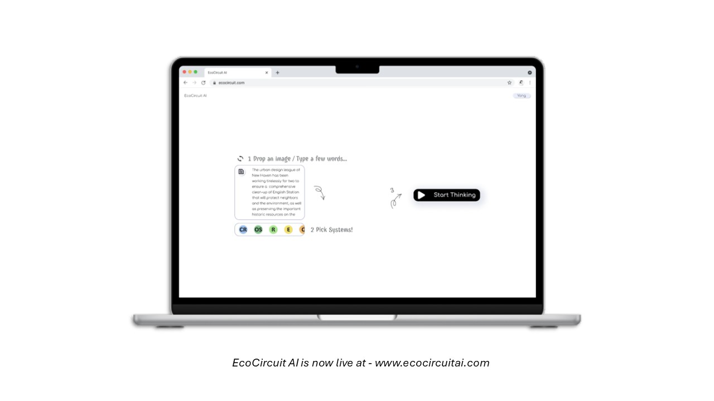
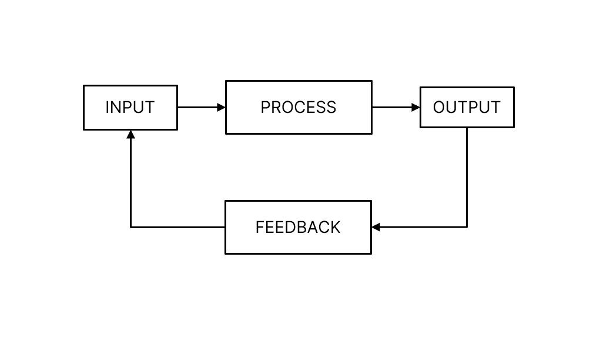
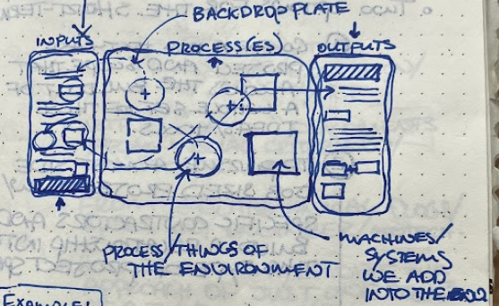
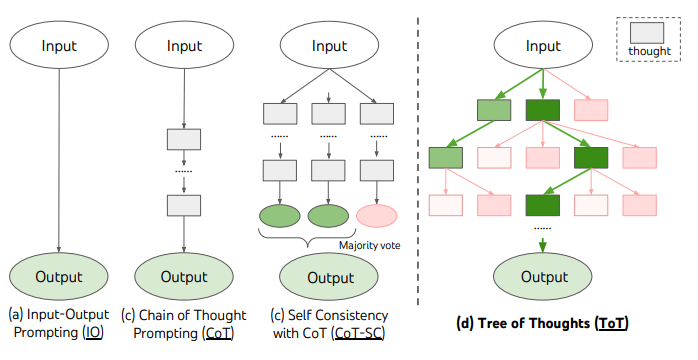
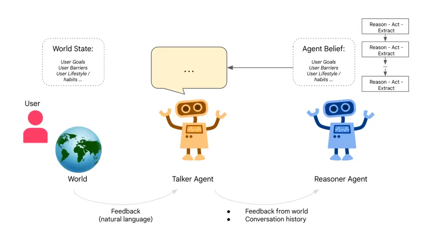
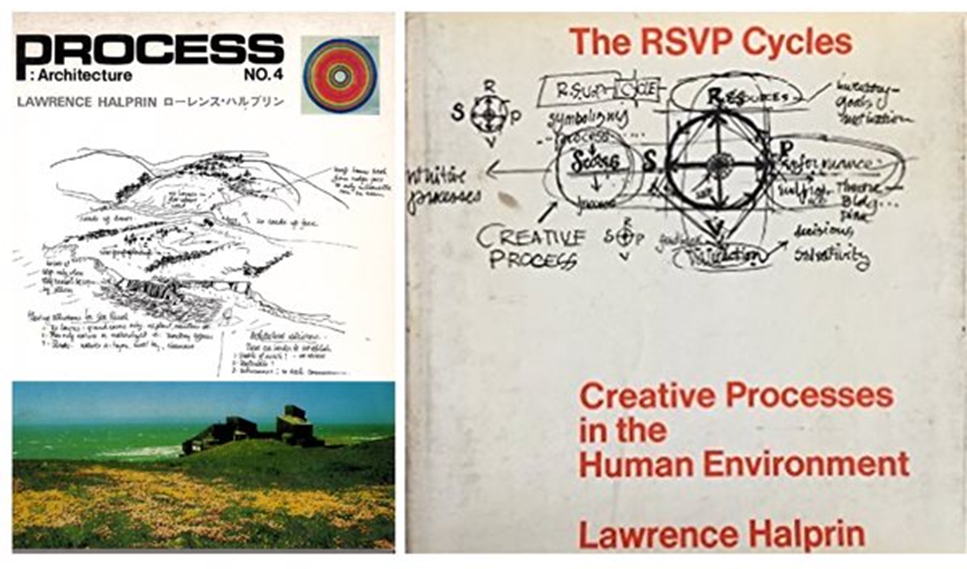

Systems Thinking Agent-Twin: Between Conceptual Ideas and Digital Twins
Thinking Article — The Agent for Systems Behind EcoCircuit AI
Disclaimer — The ideas expressed in this article are solely those of the author, written by Yuxin Yang,
Jan 25, 2026.
Key Ideas Summary —
- Language-agent reasoning is itself a creative process and an act of design.
- This article documents how EcoCircuit AI emerged from an experiment in "designing a net-positive city with AI." It engages with a long-standing challenge in complex design, engineering, and planning collaborations: the most creative work often coincides with the most demanding coordination and decision-making efforts.
- EcoCircuit 1.0 (current beta: ecocircuitai.com) explored how systems-thinking agents can surface design, program, and initiative opportunities.
- EcoCircuit 2.0 asks a follow-up question: once opportunities are identified, how might systems-thinking agents help seek coherence, validation, and internal consistency?
- Many ideas presented here were developed through discussions with Adam Mekies and were inspired by Yao et al.'s Tree-of-Thoughts.
Initial Motivation - Designing A Net-Positive City with AI?
Three years ago, Adam Mekies and I were working on several infrastructure master-planning projects in the Middle East, around the same time that ChatGPT first gained widespread attention.
One critical aspect in these projects is designing systems — infrastructure that delivers positive impact without compromising the future conditions or its surrounding context. Embedded in this work is systemic creativity—transforming what is often perceived as the rigidity or folly of "infrastructure" into something adaptive, inventive, and beautiful.
Out of curiosity, I began feeding my typical systems-design questions to ChatGPT:
"What are the inputs of the environment?
What are the outputs?
What are the environmental technologies we could utilize?
How could we co-optimize?"
That curiosity led to the release of EcoCircuit 1.0 — a spontaneous experiment in AI-assisted systems design.
EcoCircuit 1.0 Beta Release — A Spontaneous AI Systems Design Experiment
It has been a while since we published EcoCircuit 1.0 (Figure 1). From time to time, we get the question -
"Sure, this is interesting, …. but what is ecocircuit, exactly?"
Figure 2 shows several examples of the systems design diagrams we typically draw—what EcoCircuit has tried to become. These are systems flow charts—what many urban thinkers may call metabolism diagrams and engineers might describe as systems models. They live in the in between: part conceptual ideation and storytelling, part engineering logic. This "vagueness" is not an accident. It reflects how humans actually reason through systems—allowing ideas to drift fluidly and relationally (systems thinking) while also assembling or decomposing them into logical structures (systems modeling).
Seen through another lens, this "in-between" space is the collaboration and coordination layer itself—where complex projects actually take shape.
EcoCircuit AI is an LLM-empowered systems design explorer. In its simplest form in EcoCircuit 1.0, the tool converts an image or an environmental description into a systems design diagram. Users define the systems such as hydrology, energy, biosystems, transportation, food, economy.
Across systems, the agent uses the IPOF framework to describe fundamental system behaviors (Figure 3):
- Inputs — resources or elements introduced into the environment
- Processes — transformations that act upon those inputs
- Outputs — resulting resources or elements released back into the environment
- Feedback — cycles of recycling, co-optimization, or adaptation


Figure 1: A sneak peak into using EcoCircuit to rethink Desert Farm, Oceanix Busan - a Floating City, and Woodlawn Central. These examples illustrate how EcoCircuit translates environmental images or descriptions into systems design diagrams, visualizing flows across hydro, energy, biosystems, and urban systems, etc. (Note: image previews are limited—click the links for full versions. Contact for image rights concerns.)


Figure 2. Systems flow charts — called metabolism diagrams by urban thinkers or systems models by engineers — occupy a space between conceptual storytelling and engineering logic. (Image credits, left to right, top to bottom: 1,3 Sherwood Design Engineers; 2 OCEANIX / BIG - Bjarke Ingels Group; 4 Duvigneaud & Denaeyer-De Smet (1977); 5 Stoss Landscape Urbanism; 6 Metropolitan Sewer District of Greater Cincinnati. Contact for image rights concerns.)


Figure 3. Agent IPOF thinking structure in EcoCircuit 1.0 and Early sketch of EcoCircuit 1.0 interface by Adam Mekies.
Lessons Learned - Reasoning as a Creative Process and Act
The key lesson learned here is that agent reasoning itself as a designable creative process and act —not merely a tool for automation, but a medium for open-ended design and opportunity discovery.
Recent agent frameworks such as Tree-of-Thoughts and Agents Thinking Fast and Slow partially reinforce this thought. They show how cognitive architectures can be intentionally structured to alternate between fast, intuitive generation and slow, deliberate reflection — supporting exploration rather than pure efficiency or automation.
This idea also echoes historical human creative systems:
- Lawrence Halprin's RSVP cycle, which translates creativity into a repeatable framework of Resources, Score, Valuaction, and Performance — a designed choreography of collaboration and improvisation.
- Geographic Information Systems (GIS), which encode systematic geospatial exploration by organizing layers of information and relationships into a shared environment.
Taken together, these examples suggest that agent reasoning can be creatively choreographed. By giving language agents creative reasoning grammars (such as IPOF or RSVP) and expressive mediums or interfaces of exploration, we can enable them to approach open-ended design explorations — not by mimicking human intuition, but by inheriting humanity's designed ways of thinking.
This also highlights the importance of interface design: just as an agent reasons more effectively on code within a terminal than in a chat box, the medium of reasoning directly shapes the depth and quality of thought. For the built environment disciplines, could system twins or digital twins become that medium?

Figure 4. Tree of Thoughts — A reasoning framework where agents branch multiple thought paths for complex or open-ended tasks, such as creative writing. [Source: Yao et al., 2023, https://arxiv.org/abs/2305.10601]

Figure 5. Agents Thinking Fast and Slow — A dual-agent architecture combining a "Talker" (fast, intuitive) and a "Reasoner" (slow, deliberative), illustrating how designed cognitive alternation enhances open-ended reasoning. [Source: Christakopoulou et al., 2024, https://arxiv.org/abs/2410.08328]

Figure 6. Lawrence Halprin's RSVP Cycles — A designed choreography of Resources, Score, Valuaction, and Performance that turns collaboration itself into a repeatable creative reasoning process. [Source: Halprin, 1970]
Figure 7. Geographic Information Systems (GIS) — Described by Esri co-founder Jack Dangermond as "an intelligent nervous system for our planet," GIS embodies a designed interface for systematic geospatial exploration and environmental understanding. [Image: "Collage of a glacier and a Landsat 8 satellite image" (Header image from Mongabay article)]
Pivot — Systems Thinking Agent-Twin
Let's return to our initial motivation - designing a net-positive city with AI.
In EcoCircuit 1.0, we asked why and how language agents could explore systems, systematically surface design, program, and initiative opportunities in the built environment. Through deliberately designed systems prompts, EcoCircuit 1.0 demonstrated that language agents can meaningfully support early-stage systems thinking—breaking down complexity, revealing relationships, and expanding the space of possible interventions. In this sense, EcoCircuit 1.0 was intentionally exploratory, prioritizing openness and generative reasoning over certainty.
In EcoCircuit 2.0, we ask a different—but closely related—question: why and how language agents might model systems. This move toward systems modeling reflects an almost instinctive tendency in design and engineering practice. Once opportunities are identified, there is a natural desire to seek greater confidence—some form of validation, coherence, or internal consistency that makes the next step feel safer.
From a creative standpoint, this tendency is not automatically a virtue. Compared to the early systems diagrams referenced earlier (Figure 2), increased certainty can narrow the space of exploration just as easily as it can clarify it.
A useful analogy is the relationship between flowcharts and Sankey diagrams. Flowcharts emphasize branching, possibility, and alternative paths. Sankey diagrams emphasize structure, conservation, and directional certainty. Neither replaces the other; each supports a different way of thinking about systems.
Then, why and how an LM agent might model systems?
My intuition is simple. In physics, checking units and conservation laws often eliminates many errors before any detailed calculation begins. Likewise, in systems modeling, verifying system dynamics, flow directions, and constraints between elements is often enough to produce a useful system twin sketch.
WIP Systems Thinking Interface: generative renewable microgrid and hydrogen systems of an off-grid coastal island. A low-fidelity sketch of systems thinking agent-twin, created via interacting with ChatGPT.
Outcome - The (Current) Tool and the Next Step
At this point, we are excited to share the continued evolution of EcoCircuit AI — Beta 1.0. You can explore here:
👉www.ecocircuitai.com
If you are curious to experiment, contribute, design, or test the tool, visit ecocircuitai.com or reach out directly. We are actively looking for people interested in providing feedback or co-shaping EcoCircuit.
Looking ahead, the Systems Thinking Agent-Twin will continue to focus on this fundamental challenge:
How can we design a net-positive city with AI?
This question drives the development of EcoCircuit—not as a single tool, but as a collaborative systems explorer and ecosystem.
Acknowledgement
EcoCircuit AI is an open-source initiative powered by a growing community of designers, engineers, and thinkers. We thank everyone who has contributed to its conception and ongoing experimentation.
You can explore contributors and collaborators here:
👉www.ecocircuitai.com/ecocircuit/contributors
Inquire via email: yuxiny0822@gmail.com
Connect via LinkedIn: Here